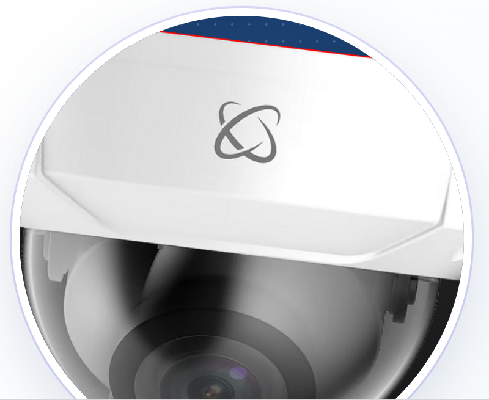
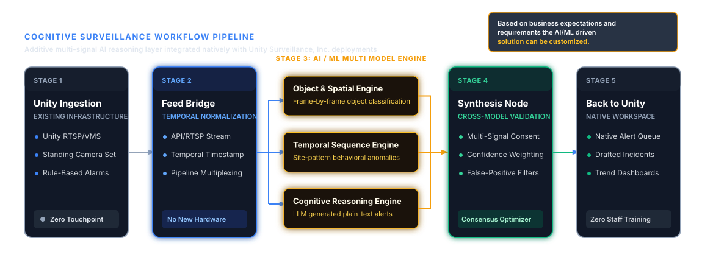

01
The Opportunity
Extend Unity's AI value proposition beyond single-purpose detection into multi-signal reasoning, verified alerts, and operational intelligence.

Veratex LLC
Veratex combines decades of gaming operations leadership with advanced artificial intelligence to transform surveillance video into trusted operational intelligence—without replacing Unity's existing infrastructure.
Executive Summary
Unity already operates inside the surveillance environments of major gaming organizations. Veratex adds a consensus-based AI reasoning layer on top of the camera and VMS feeds Unity already controls.
Extend Unity's AI value proposition beyond single-purpose detection into multi-signal reasoning, verified alerts, and operational intelligence.
Rules-based alerts create noise. Operators spend valuable time triaging events, reviewing footage, and documenting incidents after the fact.
Specialized AI analysts independently review the same feed while a synthesis node checks agreement before returning verified output.
The Solution
The architecture is intentionally additive. Existing Unity components remain in place while the Veratex intelligence layer returns verified, context-rich output to Unity's operator tools.

Detects people, vehicles, and objects—the baseline layer where many surveillance AI products stop.
Identifies anomalies against site-specific patterns over time rather than relying on isolated frames.
Creates a plain-language incident narrative so operators receive context, not simply another clip.
Cross-checks analyst findings, weighs confidence, and suppresses false positives through consensus.
Why Veratex
Veratex combines industry judgment, enterprise technology leadership, and trusted relationships to help Unity turn surveillance infrastructure into a broader intelligence platform.
Shared Vision
Our goal is to become a trusted AI intelligence partner to Unity across gaming, hospitality, and enterprise surveillance—helping create measurable value through stronger insight, better workflows, and responsible innovation.
Partnership Framework
A disciplined pilot creates the clearest path to validate technical fit, operator value, and commercial potential with limited risk.
Test the intelligence layer with one existing Unity client before finalizing broader commercial terms.
Go to market jointly under both brands with shared revenue across qualified new and existing opportunities.
Unity offers the Veratex reasoning layer as a branded intelligence module within its software suite.
Leadership
Veratex was founded on the belief that artificial intelligence should strengthen human judgment—not replace it.
Co-Founder · President & Chief Executive Officer
Former Director of Casino Operations with 45+ years leading casino openings, staff development, and global gaming operations, now leveraging AI, analytics, and automation to modernize performance and operational efficiency.
Co-Founder · Vice President & Chief Technology Officer
Strategic technology and data leader with nearly 30 years of experience driving enterprise data architecture, AI platforms, analytics systems, and governance frameworks that enable scalable, data-driven innovation.
Technical Lead – Product Development & Implementation
Business Analytics major at UT Austin with hands-on experience in Databricks, Azure, and LLM products that translate strategic finance questions into fast, reliable insights for decision makers.
Executive Contact
A disciplined pilot can validate the technology, operating fit, and commercial path with limited risk.